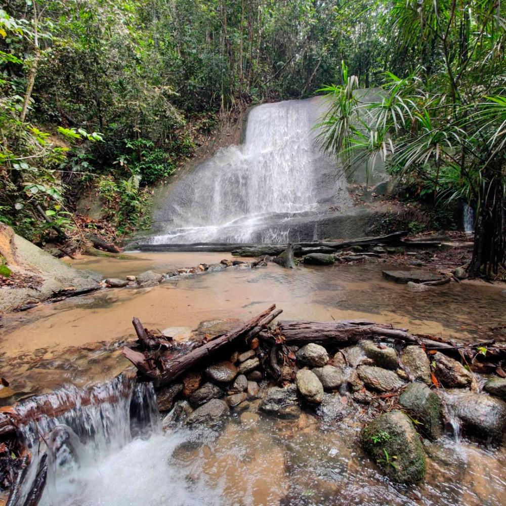

Ampang Recreational Forest

Ampang Recreational Forest, also known as Bukit Belacan, is a forest reserve that offers hiking trails, waterfalls, and natural pools. It is a great spot for nature lovers looking to explore the rich biodiversity of the region.
Bukit Kembara

Bukit Kembara in Ampang Jaya, Selangor, is a popular hiking destination featuring lush rainforests, scenic trails, and Kembara Lake. Suitable for various skill levels, it offers shaded paths and panoramic views. Access can be tricky, so hiking with a group is advised. Visitors should bring essentials, respect the environment, and check for any access restrictions due to conservation efforts or private property issues.
Bukit Saga
Saga Hill, also known as Bukit Saga, is a popular hiking spot located in Ampang Jaya, Selangor. Known for its lush greenery and scenic trails, it offers various routes suitable for different skill levels. Hikers often enjoy the challenging terrain and the serene environment, with several rest points and a small waterfall along the way. It is a favored destination for outdoor enthusiasts seeking adventure and natural beauty close to the city.
Bukit Tabur

Bukit Tabur, located near Ampang Jaya in Selangor, is a notable hiking destination renowned for its unique quartz ridge formation. Part of the Klang Gates Quartz Ridge, it offers challenging trails with stunning views of Kuala Lumpur and the surrounding areas. Though technically in the Taman Melawati area, it is closely associated with Ampang Jaya, making it a popular spot for nature enthusiasts and hikers.
Kemensah Waterfall

Kemensah Waterfall is a hidden gem located near Ampang Jaya. The waterfall is a popular spot for outdoor activities such as swimming, camping, and ATV riding. Its clear waters and scenic surroundings make it a favorite among locals and tourists alike.
Taman Rimba Ampang

Taman Rimba Ampang is a popular recreational park offering activities such as hiking, picnicking, and bird watching. The park is well-known for its lush greenery and serene environment, making it a perfect getaway from the city bustle.